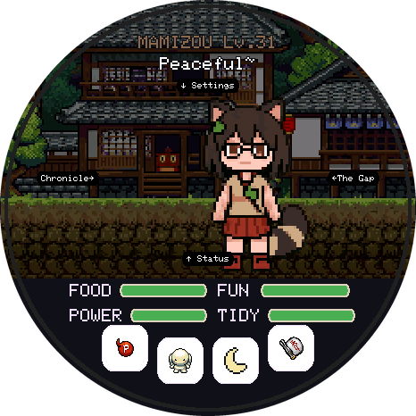

TamaTouhou
A virtual pet for the round Waveshare ESP32-S3-Touch-AMOLED-1.75. Plug the board in, click Install, done. Free and open source.
This browser can't talk to USB devices. Use Chrome or Edge on a computer
(Windows, macOS, Linux or ChromeOS), or Chrome on Android with a USB-C cable.
Firefox and Safari don't support Web Serial.
The flasher needs a secure page. Open it over
https:// (or on localhost).
How to install
- Connect the board to this computer with a USB-C data cable (some cables only charge).
- Click Install on my board and pick the port that appears (often
USB JTAG/serial debug unitorESP32-S3). - First install: tick Erase device. Updating: leave it unticked to keep your pet.
- Wait 2–4 minutes while it writes the game and the art. The board restarts by itself when it's done.
If something goes wrong
- No port in the list: unplug the board, hold its BOOT button, plug it back in, then let go. Try again.
- Still nothing: try another cable or USB port. On Linux, add yourself to the
dialoutgroup. - It stopped halfway: just run the install again. Nothing on the board can break from a failed flash.
- Screen stays black after flashing: unplug the board and plug it back in. With a battery fitted, hold PWR for 4 seconds to switch it off, then press it again.
- No Chrome or Edge? Download the files from the latest release and run
flash.shwith esptool.
Before you update
Updates keep your pet as long as Erase device stays unticked. To be extra safe, back up the save first:
python tools/board_save.py export my-pet.tamasave (see the flashing guide).
Next
- How to play: needs, eggs, evolution and the collection.
- Source code, issues and how to contribute.